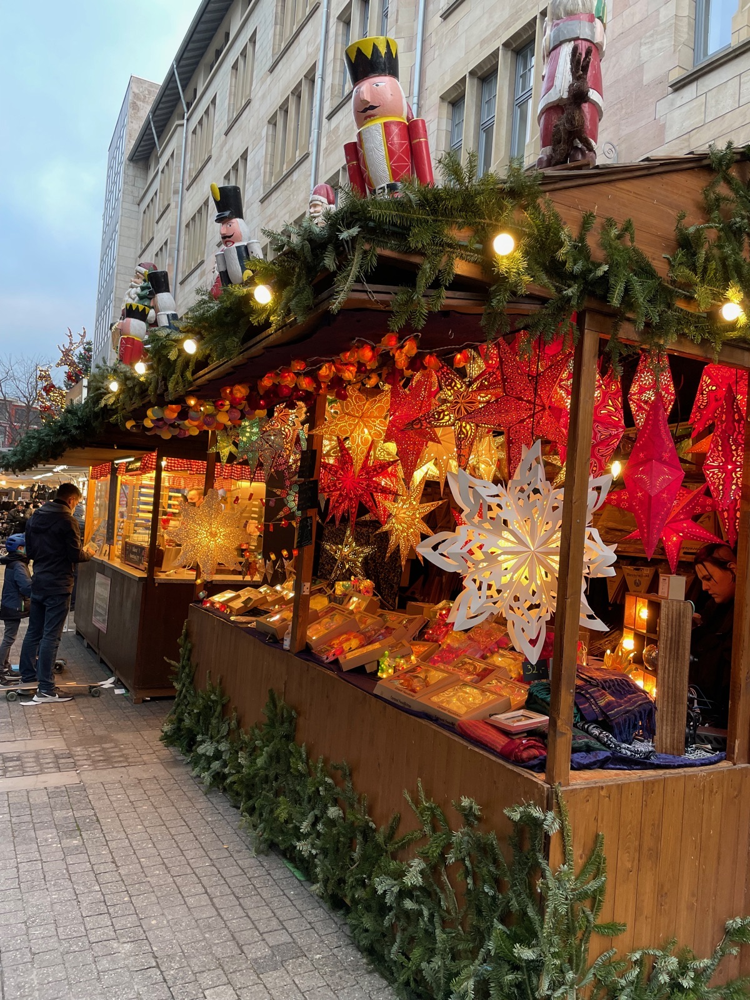

Stuttgart is home to the Deutsche Zöliakie-Gesellschaft (DZG) — Germany's celiac association. The DZG app is especially useful here. Isabella Pâtisserie and Café DA also offer dedicated GF baked goods.
Score Breakdown
Dedicated GF restaurants
Menu labeling
Staff knowledge & safety
Density of GF dining
Grocery availability
7/10Overall GF Score
GF Friendly
GF Friendly Restaurants
6 spots
Hans im Glück
GF Options
Burgers
Went here
GF Score
Safety Notes
GF buns available (+€2.50), separate fryer, amazing salads. Allergen menu in German — a celiac dining card in German is recommended.
What to Order
The salads are genuinely great. GF burger buns are also good — ask staff to confirm the separate fryer for fries.
100% dedicated gluten-free bakery. All raw materials reportedly tested for gluten before processing, which should make it a safe option for celiacs — worth a quick confirmation with staff on the day.
What to Order
Organic GF breads, croissants, brioche, colorful macarons, cakes, and sweet or savory pastries. Cashless payment only.
Stuttgart's main train station with its distinctive tower and rotating Mercedes star. Currently undergoing a major renovation as part of the Stuttgart 21 project.
City Centre
Traveler recommended
Markthalle Stuttgart
Market
A stunning Art Nouveau market hall from 1914. Beautiful interior architecture with fresh produce, international food stalls, and specialty goods. Worth visiting just for the building itself.
City Centre · Dorotheenstraße
Went here

Things to Do
Museums
Mercedes-Benz Museum
Ticketed
Nine floors tracing the entire history of the automobile, from Karl Benz's 1886 Patent-Motorwagen to modern F1 cars. One of the best automotive museums in the world.
7 suburban rail lines connecting the city centre to the car museums, airport, and surrounding towns. Fast and reliable.
VVS network
Stadtbahn / U-Bahn
Light rail network covering the city centre and inner suburbs. Runs frequently and connects all major areas.
VVS network
Bus
Extensive bus network filling gaps between rail lines. Useful for reaching areas not directly on the S-Bahn or Stadtbahn.
Money Saver
StuttCard Plus is great value if visiting both car museums — 3 days of unlimited rides plus museum discounts.
Frequently Asked Questions
Stuttgart scores 5/10 for GF friendliness (Moderate). There is 1 tested restaurant with GF options. The Deutsche Zöliakie-Gesellschaft (DZG), Germany's celiac association, is headquartered here.
Hans im Glück (3/5 GF score, Burgers) offers GF buns and a separate fryer. Isabella Pâtisserie also has a Stuttgart location for GF baked goods.
Yes. REWE and EDEKA have dedicated free-from sections. DM drogerie markt carries a solid GF range. Stuttgart is the DZG headquarters city, so awareness is higher than average.
Travel Tips
Both car museums need 3–4 hours each — don't try to do both in one day unless you're happy to rush through.
Hans im Glück has amazing salads and the GF burger buns are solid — ask about the separate fryer for fries.
Markthalle Stuttgart is an Art Nouveau gem — beautiful interior, great for browsing even if GF options are limited.
The DZG (German Celiac Association) app is especially useful here since their headquarters is in Stuttgart.
Have a tip or comment?
Found a great GF spot in Stuttgart? I'd love to hear from you.